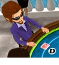
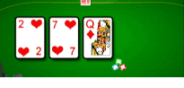

24 |
Reglas básicas |
 |
El póquer Texas Hold’Em es un juego de cartas comunitarias con cuatro rondas de apuestas. Un jugador actúa como repartidor. Su posición se denomina marca y gira en el sentido de las agujas del reloj después de cada mano.  Los dos jugadores situados a la izquierda del repartidor son la ciega pequeña (small blind) y la ciega grande (big blind) respectivamente. Son los dos únicos jugadores que ponen dinero en el bote antes de que las cartas sean repartidas.
Cada jugador recibe dos cartas boca abajo, las cartas en mano.
La primera ronda de apuestas comienza con el jugador sentado a la izquierda de la ciega grande, y continúa en el sentido de las agujas del reloj. Cuando la primera ronda de apuestas termina, tres cartas comunitarias se voltean sobre la mesa. Estas cartas se conocen como el flop.  La segunda ronda de apuestas comienza con el primer jugador que queda a la izquierda de la marca del repartidor. Las apuestas continúan en el sentido de las agujas del reloj. Cuando la segunda ronda de apuestas termina, una cuarta carta llamada turn es volteada sobre la mesa.
La tercera ronda de apuestas comienza con el primer jugador que queda a la izquierda de la marca del repartidor. Las apuestas continúan en el sentido de las agujas del reloj. Cuando la tercera ronda de apuestas finaliza, una quinta carta llamada river es volteada sobre la mesa.
La cuarta ronda de apuestas empieza con el primer jugador que queda a la izquierda de la marca del repartidor. Las apuestas continúan en el sentido de las agujas del reloj. Los jugadores deben combinar sus cartas en mano con las cartas comunitarias para conseguir la mejor jugada posible de cinco cartas. Se pueden utilizar las dos cartas en mano, solo una o ninguna (jugar la mesa). La mejor jugada posible gana el bote. Para más detalles, mira la sección Clasificación de manos. Cada jugador tiene un tiempo limitado para realizar su movimiento durante las partidas en línea, para evitar romper el ritmo de la partida. Nota: Algunos jugadores intentarán marcarse faroles para que te retires (salgas de esa mano) o para que decidas ir contra una buena mano. Otros jugadores se guiarán por las probabilidades y jugarán seguro a la espera de una gran jugada. Para aprender más sobre los trucos del póquer y para consejos, te recomendamos que mires la sección Consejos de juego. |


 |
 |
 |